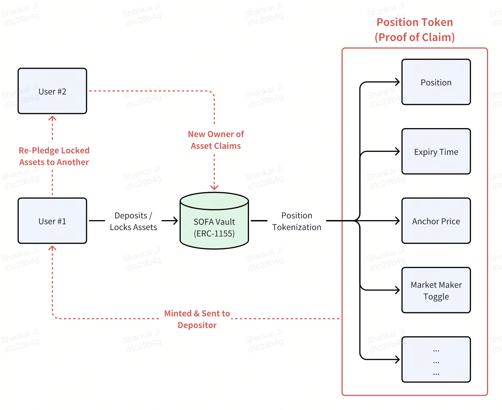

Innovating the Next Wave of DeFi
Counterparty Defaults Served a Stark Reminder to the Importance of Decentralisation
2022 provided a harsh reality check for crypto, with the demise of Genesis, Celsius, 3AC, and FTX shocking the very core of our ecosystem, and reminded us of the importance of decentralisation that many of us had forgotten in our pursuit of profits. Traditional finance went through a similar reckoning with the demise of Lehman, where a chain of (over-indebted) counterparty failures nearly brought down the global financial system.
As a result, the post-GFC era legislated the use of centralized clearing houses and tri-party clearing arrangements, effectively segregating and concentrating asset custody risk into well-funded (and highly regulated) 3rd party entities. Regulators had deemed that it was safer and more efficient to manage collateral risks within focused points of contact, as well as preventing bad actor intermediaries from playing 'fast-and-loose' with balance sheet management.
Fast forward to today, imagine if the world had a widely available technology solution that provided immutable data records, traceable transactions, definable parameters, operational transparency, and exceptional network security; surely a technology like that would provide the ideal solution for a global settlement depository, wouldn't it?
Rekindling the 'Trustless' Spirit as the Core Value of Blockchain
Decentralization. Transparency. Immutability. Exensibility. Authenticity. These are some of the common words most often uttered as the main advantages provided by blockchain. However, we feel that 'Trustless' offers the best personification of crypto's core values, as blockchain has enabled complete strangers to execute valid transactions without the reliance on arbitrary middleman or gated privileged groups.
Furthermore, smart contract immutability allows one to place their absolute faith in code instead of the goodwill of your counterparty. As such, the foundation of trustlessness is built on the uncompromisable pillars of 1) contract immutability and 2) on-chain asset settlement. These core principles will be our driving force in developing a protocol that can truly be free from the confines of centralization.
However, let's be clear that the decentralization spirit should be about promoting user access and participation, rather than absolving responsibility in some extreme form of financial anarchy. While blockchain executions could be anonymous, there is still usually a social human being at the other end of your transaction that we should treat with respect.
The development of the DCV protocols is our attempt to promote the trustless decentralisation spirit, but it's equally important for us to establish a set of 'best practices' guidelines to uphold professional accountability, even if they are self-imposed or self-regulated. Every part of our protocol design, including contract transparency, vault classification, and fair-launch tokenomics demonstrate our resolve and commitment to building a more responsible DeFi. Through leading by example, we hope to show the world that there is a better way forward, with trustless decentralization being a key cornerstone of that future.
Risk Tokenization
At their core, financial instruments are ultimately nothing more than monetary contracts against a counterparty on some claims of payments and ownership. They are governed by various man-made (& centralised) layers of regulation, and legally memorialized by physical and electronic paperwork. Unsurprisingly, we can substitute a lot of the preceding words with "digital" and "blockchain ledger" without losing the essence of their meanings.
Crypto has made tremendous progress in the area of on-chain safety, 'code is law' smart contract frameworks, transferrable digital currencies, and tokenization of RWAs. We are taking the last part one step further with our DCV protocols, where we are recording not just the notional amount, but also transcribing other vital instrument parameters on-chain, so that they can be authentically replicated and referenced upon in a process we call Risk Tokenization. The resulting output will be contained in something called 'Position Tokens', which can be thought of as ownership claims on chain-locked assets, but can be freely transferred between users like a standard ERC-20 tokens.

A Sustainable Tokenomics Model with Usage Driven Rewards
Look, money makes the world go-around, and the maximization of self-interest as a stable equilibrium outcome is a core driving force behind DeFi. However, in the past cycle, we have seen a number of (very) high profile failures of once promising projects due to poorly constructed tokenomics. Whether it's due to exit-liquidity dumps (by insiders & VCs), gimmicky inflationary experiments, price-reflexive demand models, or an over-focus on short-term gains, there is still a lot of work to do to promote a more sustainable monetary model.
In response, SOFA.org will be deploying a 100% fair-launch tokenomics model, with a fixed-supply deflationary utility token that can only be earned via protocol usage. Furthermore, all protocol earnings will be used for daily token burn operations, ensuring that all profits are directly recycled back into the pockets of our core users and hodlers. Over the long-run, the token price shall be a fundamental representation of how much (settlement) value our protocols have contributed to the ecosystem. 'Trade to Earn', anyone?
Decentralized Clearing Vaults (DCV) as a New Settlement Foundation
With the wisdom gained from the past cycle, we are directly addressing some of the structural shortcomings in DeFi while iterating on its key innovations. Specifically, the creation of the Decentralized Clear Vaults (DCV) is our ambitious attempt to establish standards of how financial assets can be atomically settled on-chain, while simultaneously catalyzing DeFi capital liquidity through transferrable Position Tokens.
By recording relevant instrument details directly on the smart contract, not only can we settle these assets on-chain, but the protocol can also mint matching Position Tokens as a definitive digital proof of claim. Furthermore, these Positions Token can be pledged to other DeFi protocols and even CeFi platforms as secure collateral, greatly enhancing capital velocity across the entire ecosystem. Finally, by having DCV vaults as a secure, transparent, and 'neutral' settlement option on the blockchain, we have eliminated asset custody concerns across crypto intermediaries, offering users complete ease of mind to focus on return ON capital rather than return OF capital.